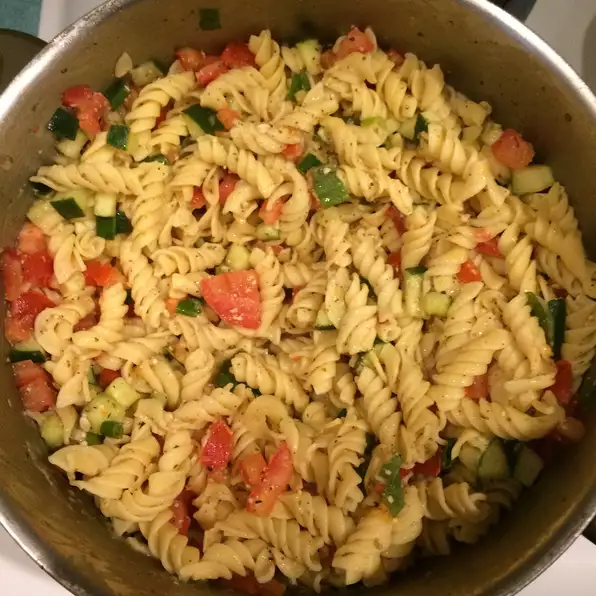

Pasta

Description
An easy, yet very yummy pasta salad. Almost any type of pasta may be used. Best if left to sit overnight.
Ingredients
- 1 (16 ounce) package uncooked rotini pasta
- 1 (16 ounce) bottle Italian salad dressing
- 2 cucumbers, chopped
- 6 tomatoes, chopped
- 1 bunch green onions, chopped
- 4 ounces grated Parmesan cheese
- 1 tablespoon Italian seasoning
Steps
- Bring a large pot of lightly salted water to a boil. Place pasta in the pot, cook for 8 to 12 minutes, until al dente, and drain.
- In a large bowl, toss the cooked pasta with the Italian dressing, cucumbers, tomatoes, and green onions. In a small bowl, mix the Parmesan cheese and Italian seasoning, and gently mix into the salad. Cover, and refrigerate until serving.